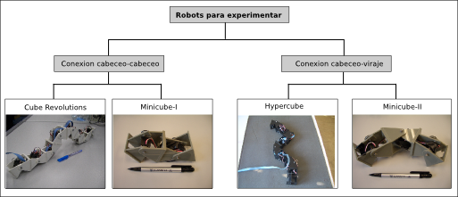

Ya tengo terminada la primera versión del capítulo de los Experimentos. Este era el último capítulo gordo que me falta. En él se presentan todos los robots, software y electrónica que he desarrollado y se documentan los experimentos. Anímate y échale un vistazo. Está lleno de fotos y de capturas de pantalla, casi no hay nada que leer 😉
Me queda por terminar las conclusiones de la tesis, los trabajos futuros, la introducción y los apéndices. Cada vez veo más cerca el final…
Ya queda poco Juan. Te está quedando genial!!
Muchas gracias 🙂
Lo he mirado algo rápido, pero prometo verlo con más detenimiento después, porque es una de las tesis que vale la pena leer completamente.
A primera lectura de los experimentos, el trabajo se ve impecable, formulación correcta, completa, etc. y más que alguna corrección, de momento solo veo posibilidades de debates o discusiones, que animan a confirmar o refutar las conclusiones para dar continuidad a nuevos estudios:
(1) Configuración dinámica de un extremo de cada módulo 0 a 90º, para transformar conexiones cabeceo-cabeceo a cabeceo-viraje. Equivale a una versatilidad en la adaptación dimensional de locomoción solo en un extremo donde sea necesario cambiar desde un modo 'Ágil' en superficie plana hacia un modo 'escalador', manteniendo una mayor estabilidad en el otro extremo.
(2) Discusión sobre el control serie vs paralelo,
ante una alternativa similar pero sin el cableado dorsal de control externo en cada punto. Es decir, comparando un modelo que traduce el control paralelo a cada servo motor vs un modelo que genera-transmite el control de la cabeza propagado en serie hacia el resto de servo motores.
(3) Prospectivas de aplicación para una locomoción con gravedad=0 ó muy cercana a cero, en el espacio exterior, incorporando una fuente de impulsos o empuje y adoptando las formas necesarias según casos de uso.
(4) Idem, para aplicaciones en nanorobótica.
(5) propagación de ondas desde el origen hacia un enjambre micro-electro-mecánico.
😉
No sólo me refiero a este capítulo, hablo de todos los que has publicado hasta ahora. Además de ser un trabajo de investigación increíble, y que espero que sepan valorarlo los examinadores como lo han hecho otros, creo que además es una obra de arte con tanto dibujo, foto y esquemas explicativos.
Muchas gracias Andrés.
Y muchas gracias también a tí Chris por todas tus aportaciones.
Gracias de verdad 😉